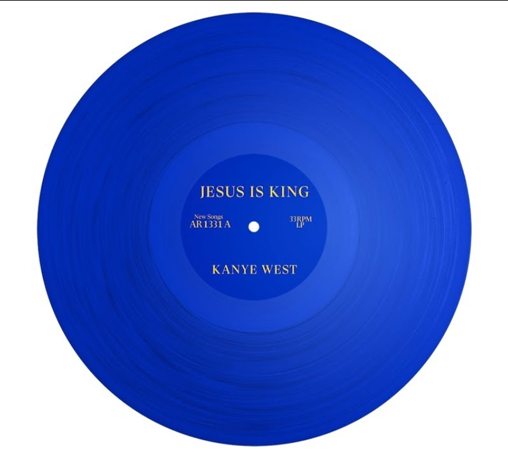

"The College Dropout" is Kanye's first studio album, released on
February 10, 2004. It not only catapulted Kanye onto the music scene
with numerous great hits but also marked an exceptional start for
the young artist. This album also set the stage for Kanye's trilogy
of college-related releases, showcasing his unique blend of
innovative production and insightful lyricism that would come to
define his iconic career.
We Don't Care3:59
Slow Jamz5:16
Through The Wire3:41
"Late Registration" Kanye's second album and the second of the
three college-related releases, was launched on August 30th, 2005.
It maintains the distinctive style introduced in "The College
Dropout," seamlessly blending Kanye's lyricism with remarkable
samples. The album not only builds upon the success of its
predecessor but also elevates Kanye's artistic expression to new
heights. The seamless fusion of diverse musical elements and Kanye's
insightful storytelling further cements this album as a pivotal work
in his discography.
Touch The Sky3:56
Gold Digger3:27
Hey Mama5:05
"Graduation" is Kanye's third studio album and the final installment
in his college-themed trilogy. Known for its remarkable tracklist,
featuring catchy beats and uplifting tunes with positive messages,
"Graduation" solidified Kanye's reputation as a groundbreaking
artist. The album's innovative sound and genre-blending approach
marked a pivotal moment in hip-hop history.
"My Beautiful Dark Twisted Fantasy" stands as Kanye's fifth studio
album, released on November 22, 2010. Regarded as Kanye's magnum
opus, the album was meticulously crafted with a pursuit of
perfection, symbolized by his decision to fly out everyone he needed
to join him in Hawaii. Kanye's relentless drive pushed everyone,
including himself, to deliver their best, resulting in an
outstanding achievement reflected in the album's impressive average
Metacritic score of 94.
Gorgeous5:57
Devil In A New Dress5:51
Runaway9:07
"Watch the Throne" marked a historic collaboration between Kanye
West and Jay-Z, two iconic figures in the hip-hop industry. The
album seamlessly blended their distinctive styles, delivering a
musical masterpiece that not only showcased their individual talents
but also set a new standard for collaborative projects in the genre.
With its stellar production, thought-provoking lyrics, and
commercial success, "Watch the Throne" solidified Kanye and Jay-Z's
status as trailblazers and innovators in the world of rap music.
No Church In The Wild4:32
Fellas In Paris3:39
Otis2:58
"Yeezus" is Kanye's sixth studio album, released on June 18th, 2013.
Known for its very harsh beats, a characteristic best exemplified by
the album's opener "On Sight," Yeezus marked a bold departure from
conventional hip-hop production, showcasing Kanye's experimental and
boundary-pushing approach to music. The album's avant-garde sound
and unapologetic lyrics challenged industry norms, solidifying
Kanye's reputation as a fearless and innovative artist.
On Sight2:36
Black Skinhead3:08
New Slaves4:16
"The Life of Pablo" is Kanye's 7th studio album and was released on
February 14, 2016, and is a dynamic and controversial album that
reflects the tumultuous journey of its creator during its creation.
The fluidity mirrored the evolving nature of Kanye's artistic
vision. The album blends a variety of genres, from gospel and R&B to
hip-hop and electronic, showcasing Kanye's eclectic musical
influences. "The Life of Pablo" serves as a snapshot of Kanye West's
complex creative process and the intersection of his personal and
artistic evolution.
Father Stretch My Hands Pt. 12:15
Wolves5:01
No More Parties In La6:14
"Ye," was released on June 1, 2018, and is Kanye's 8th studio album,
a masterful creation that not only achieved massive success but also
served as a poignant exploration of sensitive subjects. On the album
cover, it boldly states "I hate being bipolar; it's awesome,"
offering a clear and unapologetic perspective on Kanye's personal
struggle with mental health and his bipolar disorder. The album's
raw and introspective nature not only resonated with audiences but
also sparked important conversations surrounding mental health in
the realm of popular culture.
Yikes3:08
Ghost Town4:31
Violent Crimes3:35

"Jesus Is King" is Kanye's ninth studio album, released on October
25, 2019. This gospel-inspired album represents a significant
departure from Kanye's previous works, focusing on faith,
Christianity, and his spiritual journey. Known for its uplifting and
soulful sound, the album features gospel choirs, religious
references, and no explicit content, marking a notable shift in
Kanye's musical and lyrical direction. "Jesus Is King" stands as a
testament to Kanye's evolving work and his exploration of
spirituality in his music.
Selah2:44
Follow God1:44
God Is3:23
"Donda" is Kanye's tenth album, released on August 29, 2021. Named
after his late mother, the project explores themes of family,
loss, and personal experiences. With a mix of genres and notable
collaborations, the album showcases Kanye's innovation in music
production. Despite mixed reviews, "Donda" stands as a significant
addition to Kanye's discography, reflecting his ongoing artistic
evolution in contemporary hip-hop. The album's eclectic sound and
collaborations contribute to its dynamic nature, making it a
noteworthy and multifaceted piece in Kanye's musical journey.